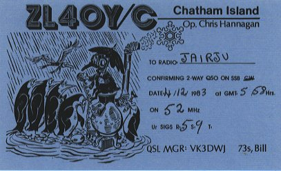
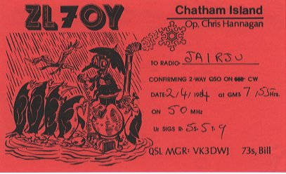
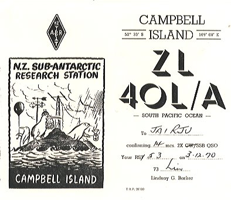

|
1983年4月、Chathm Islandから出ていたZL4OY/C・BillのQSL。 当時のZLは51MHz帯から上でQRVしていたが、このQSOは52MHz帯で行われた。 1984年にはChathmの正式なコールサイン・ZL7OYに変更になった。 Billは1982年頃にZL4OY/AでCampbell Is(現・ZL9)からもQRVした。 この時はJAとQSO出来なかったが、1982年4月20日にWB7OHFなどとQSO(初の北米QSO)している。 Auckland & Campbell Is.の"Auckland"の「/A」をコールサインに付けて運用していた。 下のQSLは1970年頃にHFでQRVしていたZL4OL/A |
